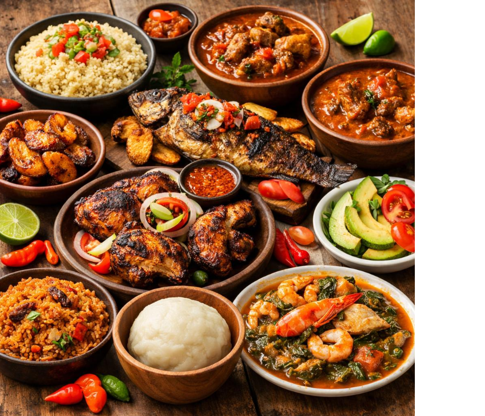

Depuis son plus jeune âge, Marie a appris les secrets de la cuisine ivoirienne auprès de sa grand-mère à Daloa. Chaque plat chez "Chez Marie" est une invitation à un voyage culinaire, préparé avec les ingrédients les plus frais et une passion inébranlable.
Venez découvrir l'authenticité et la générosité d'une cuisine qui réchauffe le cœur et éveille les papilles.